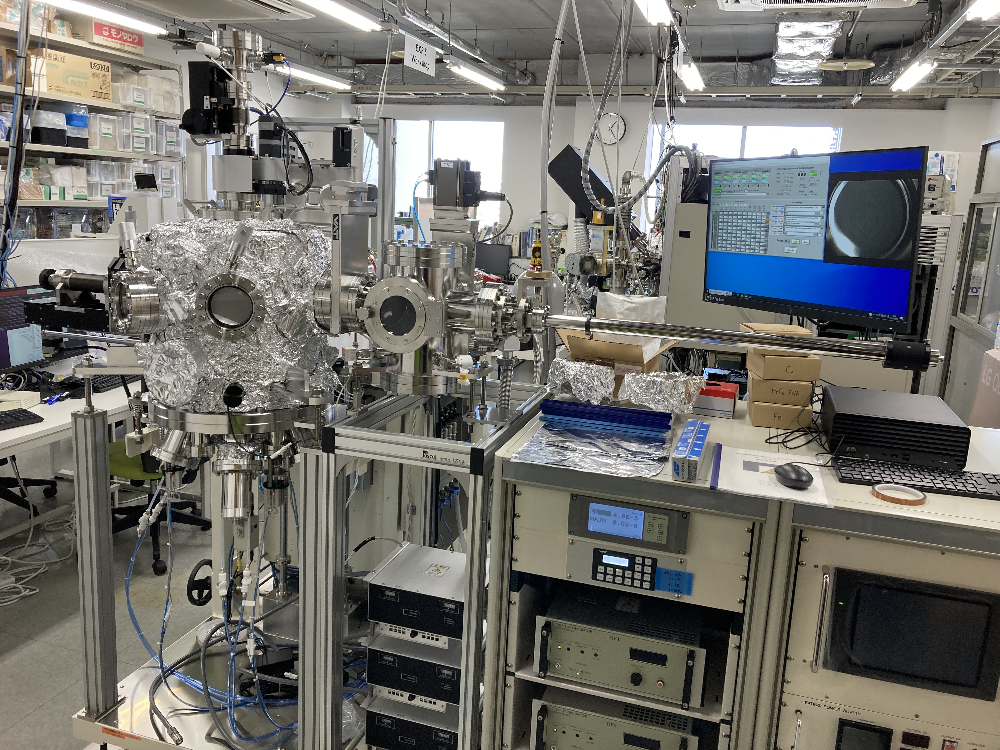

論文紹介
材料科学／物性物理に関する論文を紹介
2023年
8月

先月報告されたPb10-xCux(PO4)6Oに関する常温常圧超伝導に関する再試論文が多いが、日本からは1本も出ない。日本におけるアカデミアの余裕のなさが垣間見えるのか、ただ興味が薄いのか、それとも予め超伝導でないと見切りを着けていたのか。
7月
先月報告されたPb10-xCux(PO4)6Oに関する常温常圧超伝導に関する再試論文が多いが、日本からは1本も出ない。日本におけるアカデミアの余裕のなさが垣間見えるのか、ただ興味が薄いのか、それとも予め超伝導でないと見切りを着けていたのか。(調査中)
6月
先月報告されたPb10-xCux(PO4)6Oに関する常温常圧超伝導に関する再試論文が多いが、日本からは1本も出ない。日本におけるアカデミアの余裕のなさが垣間見えるのか、ただ興味が薄いのか、それとも予め超伝導でないと見切りを着けていたのか。（調査中）